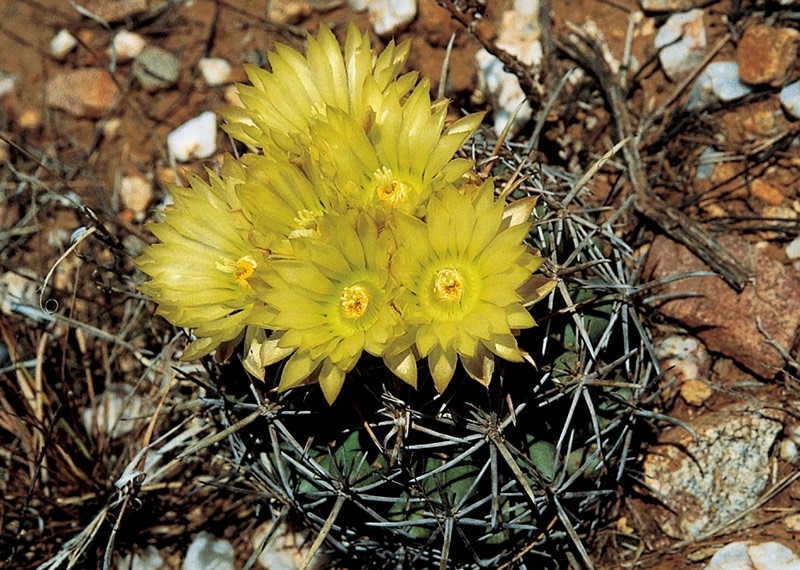
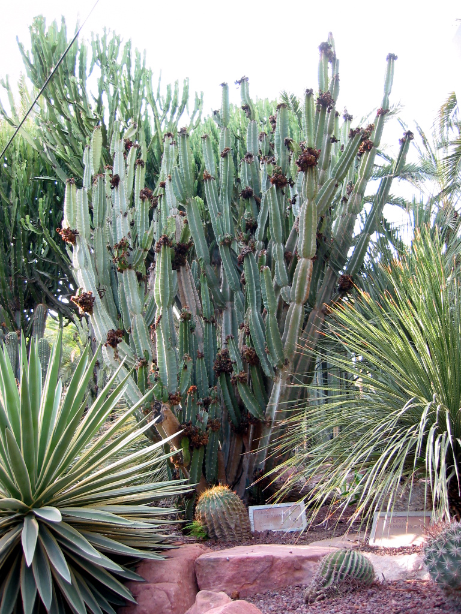
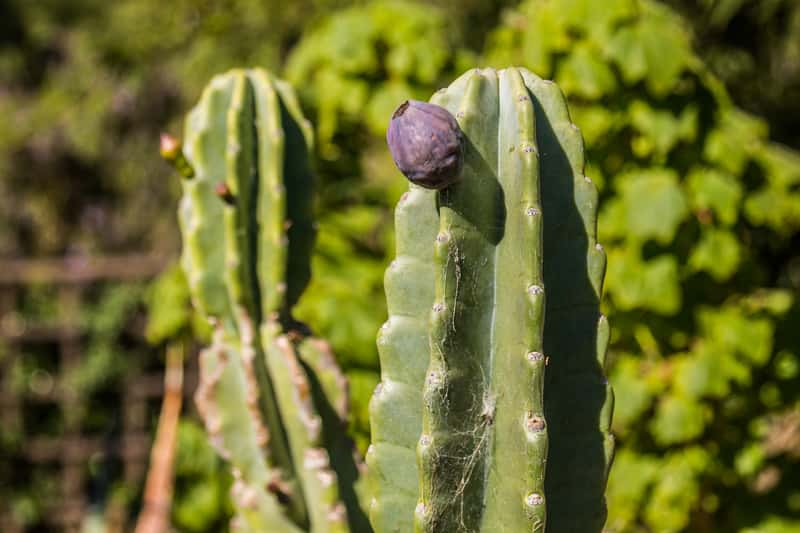

Cereus repandus Cactus
Cacti have a easy appeal that attracts plant fanatics and creditors alike.
Introduction:
With an often tree-like appearance, its cylindrical gray-green to blue stems can reach 10 metres (33 feet) in height and 10–20 cm in diameter as a self-supporting plant. However, if supported by a scaffold, C. repandus has grown to a height of 110 feet (34 meters) at the SDM College of Dental Sciences at Dharwad, Karnataka, India, technically making this the tallest cactus plant in the world, although no cactus under natural conditions exceeds eighty-two feet (25 meters) in height in the case of Cereus stenogonus.
There are nine to ten rounded ribs that are up to 1 centimeter high. The small areoles on it are far apart. The gray, needle-like thorns are very variable. They are often numerous, but can also be missing entirely.
The longest thorns are up to 5 centimeters long. The large, cream-colored, nocturnal flowers remain open for only one night and are of vital importance to pollinating bats.

Physical Characteristics
Because of its amazing growth morphology, Cereus repandus distinguishes out. Some specimens can grow up to 10 meters (33 feet) or more in height in their natural environment, and it has long, columnar stems that can grow to incredible heights.
The cylindrical shape of the stems, which frequently have bluish-green to gray-green colours, distinguishes them. The cactus's structural stability and ability to store water are increased by the ribbed nature of these stems.
The ribs are dotted with clusters of areoles, tiny circular structures that sprout new stems, flowers, and spines.
Cultural and Ecological Significance:
Beyond its biological characteristics, Cereus repandus matters culturally in the regions where it lives. The tasty fruits, which are included into native cuisine and traditional food, have functioned as an important tool of water for the local populationA number of wildlife species use the cactus as a home and food source, which adds to its ecological significance.
Conservation and preservation:
Populations of Cereus repandus are threatened in some locations because of habitat loss and unsustainable exploitation. To ensure the future of this cactus and the ecosystems it supports, conservation activities are essential.

How to take care of Cereus repandus cactus:
Cereus repandus, popularly referred to as the Peruvian apple cactus or the Giant cactus, requires special care in order to maintain healthy growth and development.
Potting:
To avoid water buildup, choose a pot with drainage holes. Every few years, repot your cactus to add fresh soil and more room for growth.
Watering:
In between waterings, let the soil dry out. When the top inch of soil seems dry to the touch throughout the growing season, water the cactus. When the cactus is dormant in the winter and needs less water, reduce irrigation. Avoid letting the plant sit in damp soil since overwatering might cause root rot.
Humidity:
Low-humidity settings are ideal for Cereus repandus since they resemble its natural habitat. This cactus doesn't require higher humidity levels.
Protection for cold:
Protect your cactus from frost and extended cold temperatures if you reside in a colder climate. During the winter, bring it indoors or offer some sort of shelter.

Temperature required forCereus repandus Cactus:
Warm temperatures are preferred by Cereus repandus. Maintain temperatures between 70°F and 90°F (21°C and 32°C) during its active growing season (spring and summer). The cactus can withstand colder temperatures in the winter, down to about 50°F (10°C), but it should be shielded from extended cold periods.
Light :
Provide Cereus repandus with plenty of sunlight. Put it somewhere that receives full sun for the majority of the day. If you're growing it indoors, put it close to a window that faces south or west and gets lots of light.
• Soil Requerments:
Use a well-draining cactus or succulent potting mix. Alternatively, you can create your own mix by combining regular potting soil with sand and perlite to enhance drainage.
Propagation of the Cereus repandus Cactus
Stem cuttings can be used to multiply Cereus repandus. Before planting the cut ends in soil with good drainage, let the cut ends dry and callus. Remember to be patient as cuttings can take some time to grow and root.
Pests and Diseases:
On your cactus, keep a watch out for typical pests like scale insects and spider mites.. If you see pests, use an appropriate insecticidal soap or a gentle brush to remove them carefully.
Observation and adjustment:
Watch out for common pests like spider mites and scale insects on your cactus.
With an often tree-like appearance, its cylindrical gray-green to blue stems can reach 10 metres (33 feet) in height and 10–20 cm in diameter as a self-supporting plant. However, if supported by a scaffold, C. repandus has grown to a height of 110 feet (34 meters) at the SDM College of Dental Sciences at Dharwad, Karnataka, India, technically making this the tallest cactus plant in the world, although no cactus under natural conditions exceeds eighty-two feet (25 meters) in height in the case of Cereus stenogonus.
Beyond its biological characteristics, Cereus repandus matters culturally in the regions where it lives. The tasty fruits, which are included into native cuisine and traditional food, have functioned as an important tool of water for the local populationA number of wildlife species use the cactus as a home and food source, which adds to its ecological significance.
Populations of Cereus repandus are threatened in some locations because of habitat loss and unsustainable exploitation. To ensure the future of this cactus and the ecosystems it supports, conservation activities are essential.
To avoid water buildup, choose a pot with drainage holes. Every few years, repot your cactus to add fresh soil and more room for growth.
In between waterings, let the soil dry out. When the top inch of soil seems dry to the touch throughout the growing season, water the cactus. When the cactus is dormant in the winter and needs less water, reduce irrigation. Avoid letting the plant sit in damp soil since overwatering might cause root rot.
Low-humidity settings are ideal for Cereus repandus since they resemble its natural habitat. This cactus doesn't require higher humidity levels.
Protect your cactus from frost and extended cold temperatures if you reside in a colder climate. During the winter, bring it indoors or offer some sort of shelter.